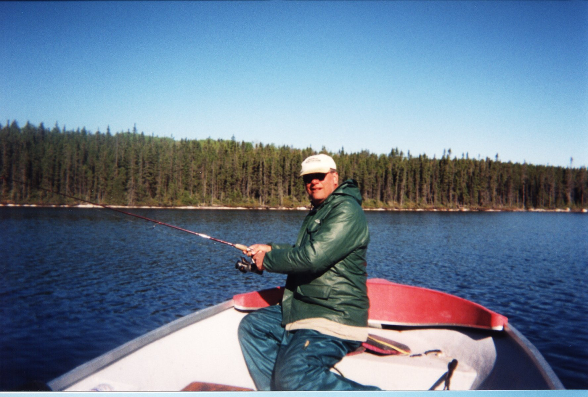

Gouin Reservoir June 2000
The characters ...
The weather was cold ...
yes, ice pellets on my tackle box
It warmed up a little ...
It even got sunny ...

Johns 4 lb walleye
The boys with the stringer ...